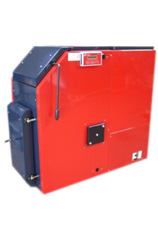

Multistoker Standard
KSM-Multistoker Standard har påbygget silo, som kan anvendes til alle former for biobrændsel der selv kan løbe til sneglen. Brændsler som savsmuld og spåner er derfor IKKE velegnet. Alle kan suppleres med fast brændsel.
Det er Multistoker modellerne 175-13, 275-18 samt 375-35 med ydelser fra 12 til 35kW, der kan leveres med påbygget silo.
Stokerne er som standard monteret med Ilt-styring og kølespiral, som skal tilsluttes ved brug af fastbrændsel og anvendelse af trykekspansion. Alle kedlerne har fremløb og retur i begge sider så tilslutningningssiden er valgfri